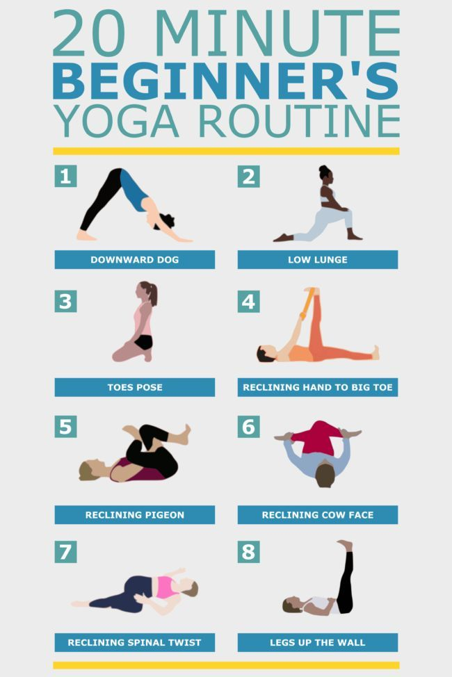

Beginner Routines
Consistency is key when starting yoga, which is why we’ve created simple routines for beginners. Our morning routine uses gentle stretches like Cat-Cow and Standing Forward Fold to wake up the body. Evening routines often include restorative postures such as Legs-Up-the-Wall and Reclined Butterfly to calm the mind and prepare for restful sleep. Each sequence is short, lasting between 10 and 20 minutes, making it easy to fit into any schedule. We encourage beginners to start slowly, practicing two or three times per week, then gradually increase frequency as comfort grows. These routines combine poses, breath, and relaxation, helping to build familiarity without overwhelm. Printable guides and video demonstrations are available so you can follow at home. By practicing regularly, you’ll notice improvements in flexibility, energy, and focus, all while building a strong foundation for more advanced yoga in the future.
